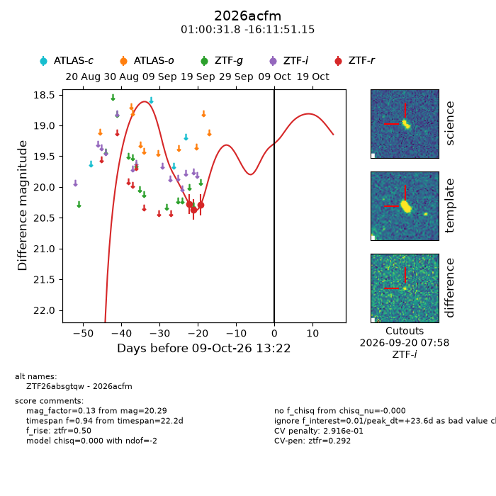
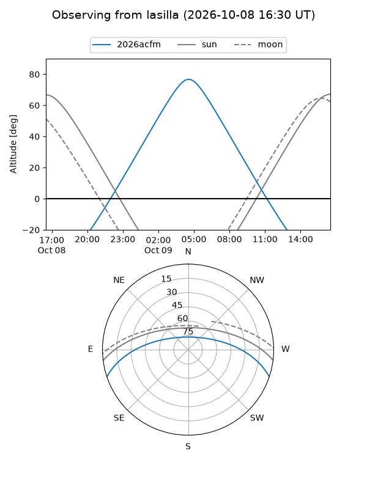
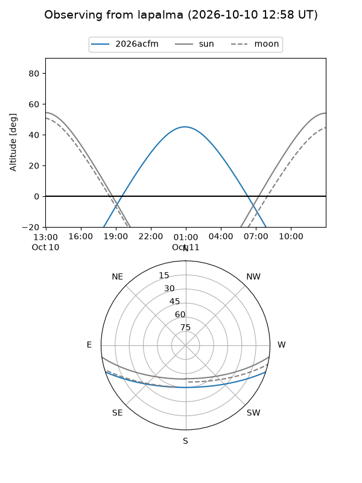
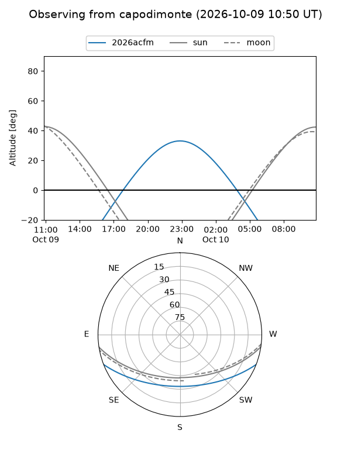
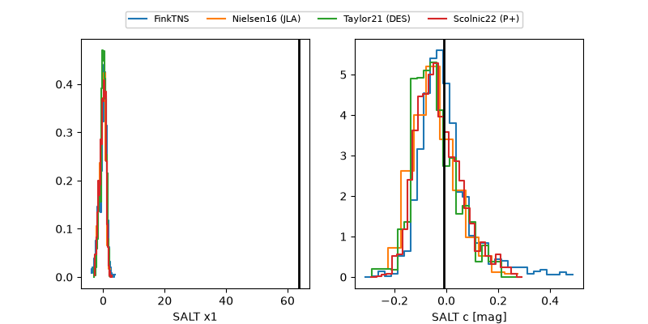

2026acfm
Target 2026acfm at 2026-10-09 13:25
Aliases and brokers:
FINK-ZTF: ztf.fink-portal.org/ZTF26absgtqw
Lasair-ZTF: lasair-ztf.lsst.ac.uk/objects/ZTF26absgtqw
ALeRCE-ZTF: alerce.online/object/ZTF26absgtqw
YSE-PZ: ziggy.ucolick.org/yse/transient_detail/2026acfm
TNS name: wis-tns.org/object/2026acfm
Direct TNS query: direct search
alt names
ZTF26absgtqw (ztf,fink_ztf)
2026acfm (tns,yse)
Coordinates:
equatorial (ra, dec) = 15.1327,-16.19754
equatorial (HMS+DMS) = 01:00:31.84,-16:11:51.15
galactic (l, b) = (134.3101,-78.86790)
Flags:
peak dt: +23.6
likely cv: !!
CV pen: 0.29164857677825906
Photometry:
last ztfr=20.29
3 ztfr detections
Lightcurve

Visibility



Additional plots
